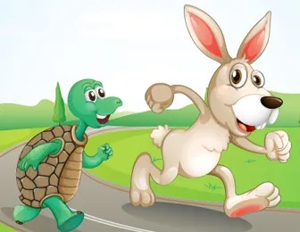

Founders of the Turtles' Academy were once going through a learning session, and found themselves much weaker than others. All other students were good at their learning while the team was a very slow learner. Leader of the team, suddenly reminds the story of Turtle and a Rabbit. As in the conventional story, we learn that the "Turtle" wins. But in real, it was not going to happen. It's not only the turtle who wins. Rabbits in our society are active nowadays.
Team leader, then extended the story upto a total of four episodes. Including, "when the rabbit wins", "turtle puts proposal after his observation" and finally, "they both appear as a team". New story speaks alot. The team, then achieved their goals and emerged as founders of this Academy.
Therefore, the students here, are called turtles. As they are not only slow and steady, but also strategic and team workers.
Episode 1Once upon a time a turtle and a rabbit had an argument about who was faster. They decided to settle the argument with a race. The rabbit was complacent and fell asleep, and the turtle won the race. What is the moral of the story? “Slow-and-steady wins the race” |
Episode 2The rabbit was disappointed at losing the race and he did some thinking. He thought he should not lose in a race like this. He challenged the turtle to another race. The turtle agreed. This time the rabbit remained focused and finished the race way ahead of the turtle. What is the moral of the story? Fast-and-consistent will beat the slow-and-steady” |
 |
Episode 3The turtle did some thinking this time, and realized that there’s no way he can beat the rabbit in a head-on race like this. He thought for a while, and then challenged the rabbit to another race. But this time, the turtle gets to design the race route. The rabbit sped off just as focused as the last race but arrived at a broad river. The turtle arrived later, swam across the river and reached the finishing line. |
|
What is the moral of the story? “Identify your strength and your competitor’s weakness” |
Episode 4The rabbit and the turtle, by this time, had become pretty good friends and they did some thinking together. Both realized that the last race could have been run much better. So they decided to run the race again, but this time as a team. The rabbit carried the turtle for the first part of the route, then the turtle swam across the river with the rabbit on its back, and finally finished the race together. What is the moral of the story? “The team is stronger than the sum of its components” |